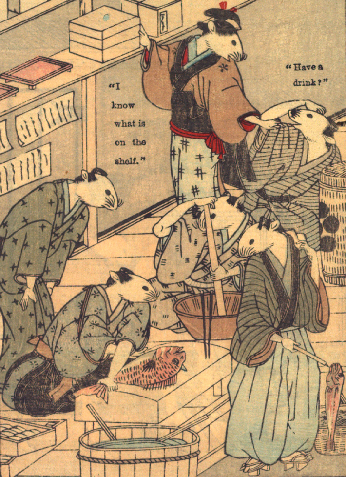

台所で、婚礼の宴の料理を作る鼠たち。鯛をさばくもの、すり鉢で何かをするものなどがいる。土間には、魚売りらしい鼠が来ている。
著作者：David Thompson／出典：親書誌：U426_nichibunken_0112：Nedzumi no Yome-Iri／日付：2006／資源識別子：U426_nichibunken_0112_0007_0000
Copyright (c)2010- International Research Center for Japanese Studies, Kyoto, Japan. All rights reserved.